library(tidyverse)
library(mgcv)
library(itsadug)10 Generalized Additive Models (GAMs)
This chapter was written by Márton Sóskuthy (Sec. 1-4) with Sec. 5 added by Morgan Sonderegger, who also changed some formatting throughout for consistency with the rest of this e-book.
This lab covers topics from:
It refers to the “Day 1” slides from Sóskuthy’s Dec. 2024 GAMMs workshop, available here.
Topics:
- Generalized Additive Models (GAMs)
10.1 Preliminaries
We load a couple of libraries: mgcv is the main library for fitting GAMs; itsadug is mainly for plotting (and has a number of other convenience functions). The tidyverse is for everything else!
New packages for us are:
- mgcv (Wood 2017), for fitting generalized additive (mixed) models (GA(M)Ms).
- itsadug (van Rij et al. 2022), convenience functions for fitting and interpreting GAMMs using mgcv.
Data import:
temp <- read.delim("https://osf.io/download/7ut2r/")
price_bin <- readRDS(file = url("https://osf.io/download/vs6jk/"))
## you can also download the data files from Piazza, and
## load them in as follows from the current directory:
# temp <- read_tsv("global_temperature.txt")
# price_bin <- readRDS("price_bin.rds")Subset of older speakers from price_bin data, which we’ll need below:
price_bin_older <- price_bin %>%
filter(age == "older")10.2 New Zealand diphthong data
10.2.1 Subset: older speakers only
Here’s the GAM we looked at in the slides (slide 23 on), fitted to the subset of the price_bin data from older speakers:
price_bin_older_gam <-
bam(f2 ~ s(measurement_no, bs = "cr", k = 11),
data = price_bin_older
)Here’s the summary that we went through:
summary(price_bin_older_gam)
##
## Family: gaussian
## Link function: identity
##
## Formula:
## f2 ~ s(measurement_no, bs = "cr", k = 11)
##
## Parametric coefficients:
## Estimate Std. Error t value Pr(>|t|)
## (Intercept) 1538.289 1.338 1149 <2e-16 ***
## ---
## Signif. codes: 0 '***' 0.001 '**' 0.01 '*' 0.05 '.' 0.1 ' ' 1
##
## Approximate significance of smooth terms:
## edf Ref.df F p-value
## s(measurement_no) 8.053 9.22 588.4 <2e-16 ***
## ---
## Signif. codes: 0 '***' 0.001 '**' 0.01 '*' 0.05 '.' 0.1 ' ' 1
##
## R-sq.(adj) = 0.161 Deviance explained = 16.1%
## fREML = 1.9393e+05 Scale est. = 50787 n = 28365And here’s a simple plot of the smooth, using the plot_smooth() function from the itsadug package.
plot_smooth(price_bin_older_gam, view = "measurement_no")
## Summary:
## * measurement_no : numeric predictor; with 30 values ranging from 0.000000 to 100.000000.
## * NOTE : No random effects in the model to cancel.
## 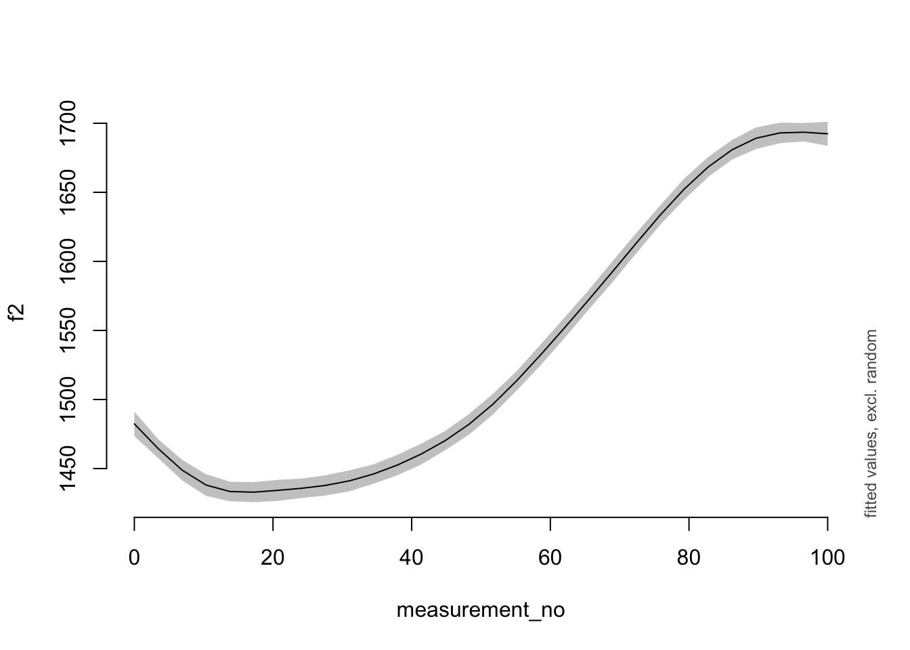
Exercise 10.1 I’d like to invite you to explore this smooth.
What happens to the smooth if you change the value of
k, either increasing or decreasing it? Does the code still work? What does the resulting smooth look like when you plot it using plot_smooth()?Try using different types of basis functions. One of them can be accessed using
bs="tp"(a thin-plate smooth); another one usingbs="ps". Do these change the shape of the smooth?
Example code for Exercise 10.1 to un-hide if you need help:
Code
a.
price_bin_older_gam_k6 <-
bam(f2 ~ s(measurement_no, bs = "cr", k = 6),
data = price_bin_older
)
plot_smooth(price_bin_older_gam_k6, view = "measurement_no")
b.
price_bin_older_gam_tp6 <-
bam(f2 ~ s(measurement_no, bs = "tp", k = 6),
data = price_bin_older
)
plot_smooth(price_bin_older_gam_tp6, view = "measurement_no")10.2.2 Full dataset
And now we look at the full data set, capturing the difference between the older vs. younger groups using a difference smooth. Here’s the model that we explored in the slides (slide 37 on):
price_bin$age_o <- as.ordered(price_bin$age)
contrasts(price_bin$age_o) <- "contr.treatment"
price_bin_gam <-
bam(
f2 ~ age_o +
s(measurement_no, bs = "cr", k = 11) +
s(measurement_no, bs = "cr", k = 11, by = age_o),
data = price_bin
)The model summary.
summary(price_bin_gam)
##
## Family: gaussian
## Link function: identity
##
## Formula:
## f2 ~ age_o + s(measurement_no, bs = "cr", k = 11) + s(measurement_no,
## bs = "cr", k = 11, by = age_o)
##
## Parametric coefficients:
## Estimate Std. Error t value Pr(>|t|)
## (Intercept) 1539.117 1.329 1158.04 <2e-16 ***
## age_oyounger -119.471 2.096 -56.99 <2e-16 ***
## ---
## Signif. codes: 0 '***' 0.001 '**' 0.01 '*' 0.05 '.' 0.1 ' ' 1
##
## Approximate significance of smooth terms:
## edf Ref.df F p-value
## s(measurement_no) 8.518 9.457 584.32 <2e-16 ***
## s(measurement_no):age_oyounger 5.895 7.130 73.17 <2e-16 ***
## ---
## Signif. codes: 0 '***' 0.001 '**' 0.01 '*' 0.05 '.' 0.1 ' ' 1
##
## R-sq.(adj) = 0.253 Deviance explained = 25.3%
## fREML = 3.2386e+05 Scale est. = 50069 n = 47419And a plot!
plot_smooth(price_bin_gam, view = "measurement_no", plot_all = "age_o")
## Summary:
## * age_o : factor; set to the value(s): older, younger.
## * measurement_no : numeric predictor; with 30 values ranging from 0.000000 to 100.000000.
## * NOTE : No random effects in the model to cancel.
## 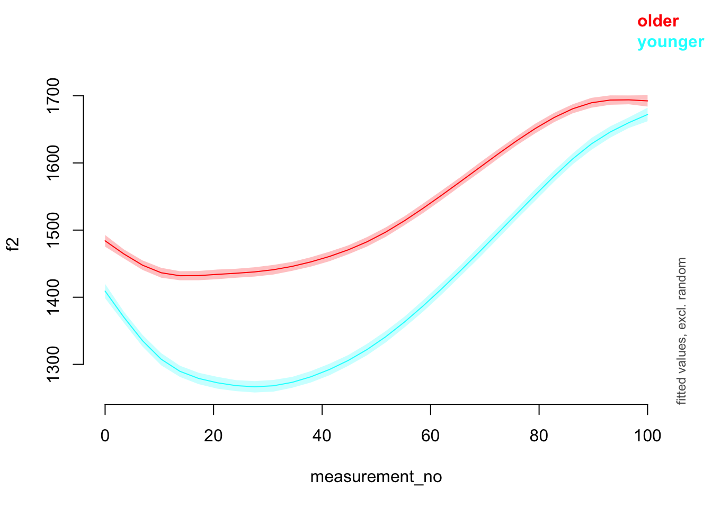
It’s also possible to plot the difference smooth alone (using plot_diff() from itsadug).
plot_diff(price_bin_gam,
view = "measurement_no",
comp = list(age_o = c("older", "younger"))
)
## Summary:
## * measurement_no : numeric predictor; with 100 values ranging from 0.000000 to 100.000000.
## * NOTE : No random effects in the model to cancel.
##
##
## measurement_no window(s) of significant difference(s):
## 0.000000 - 100.000000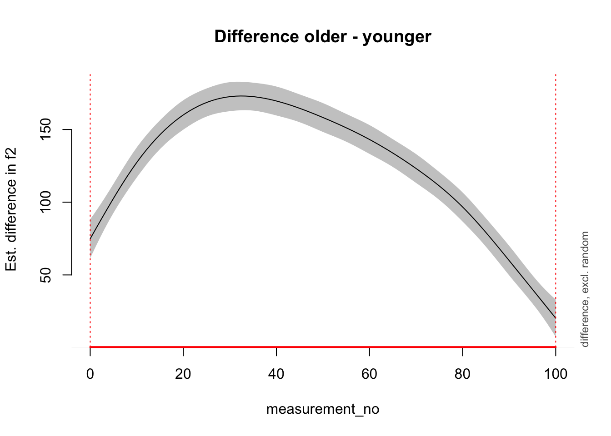
Exercise 10.2 The data set also contains a variable called following_voiceless, which captures the voicing of the following segment. We expect that this vowel will be realised differently when followed by a voiceless segment; but is that the case?
Set up following_voiceless as an ordered factor with treatment coding (like we did for
age_oabove).Fit a model with a difference smooth (again, analogous to the one above).
Plot the results.
Solutions to Exercise 10.2:
Code
price_bin$foll_v_o <- as.ordered(price_bin$following_voiceless)
contrasts(price_bin$foll_v_o) <- "contr.treatment"
price_bin_gam_fv <-
bam(
f2 ~ foll_v_o + age_o +
s(measurement_no, bs = "cr", k = 11) +
s(measurement_no, bs = "cr", k = 11, by = age_o) +
s(measurement_no, bs = "cr", k = 11, by = foll_v_o),
data = price_bin, method = "ML"
)
summary(price_bin_gam_fv)
plot_smooth(price_bin_gam_fv, view = "measurement_no", plot_all = "foll_v_o")10.3 Global Temperature Data
Let us now play around with the global temperature data. It’s stored in a data frame called temp. The relevant columns we’re interested in are Year and median, where median actually has the temperature values (it’s “median” because the temperatures from before the modern age are based on estimates from many different models; there are a range of possible estimates for each year, so the median gives you the “best guess”).
Here’s a plot of the raw data:
plot(median ~ Year, data = temp, pch = 15, cex = 0.2)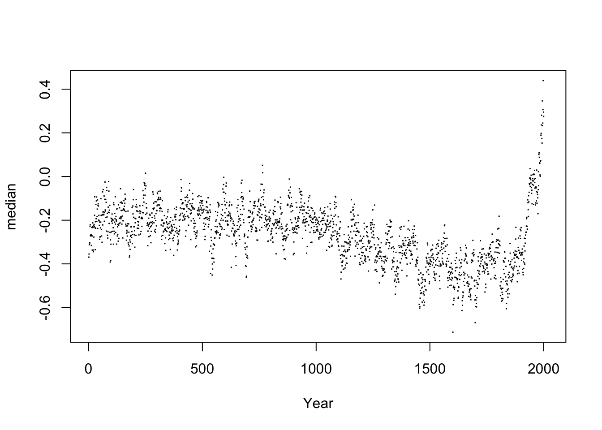
And here is a GAM fit to this data to get you started, along with a prediction plot.
temp_gam <- bam(median ~ s(Year, bs = "cr", k = 50), data = temp)
plot(median ~ Year, data = temp, pch = 15, cex = 0.2)
plot_smooth(temp_gam, view = "Year", add = T, n.grid = 2000, rug = F)
## Summary:
## * Year : numeric predictor; with 2000 values ranging from 1.000000 to 2017.000000.
## * NOTE : No random effects in the model to cancel.
## 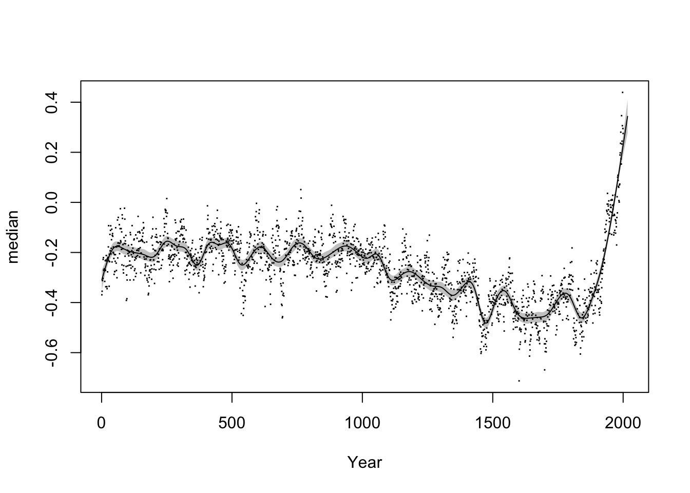
For reference, here’s how the GAM plot shown in the slides (slide 17) was created:
temp_gam_slides <- bam(median ~ s(Year, bs = "ad", k = 50), data = temp, rho = 0.7)
plot(median ~ Year, data = temp, pch = 15, cex = 0.2)
plot_smooth(temp_gam_slides, view = "Year", add = T, n.grid = 2000, rug = F)
## Summary:
## * Year : numeric predictor; with 2000 values ranging from 1.000000 to 2017.000000.
## * NOTE : No random effects in the model to cancel.
## 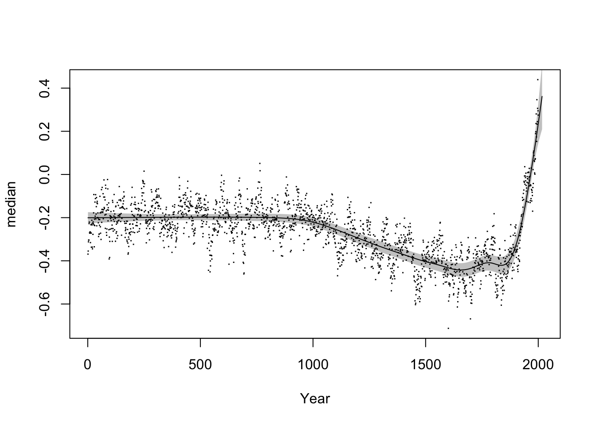
Notes on this model:
The
bs="ad"argument sets up a so-called adaptive smoother that can vary the smoothing parameter as a function of the time variable, i.e. certain date ranges can have more or less wiggly estimates than others. Standard smoothers (e.g.bs="cr"orbs="tp") can’t do this.The argument
rho=0.7at the end adds an autoregressive error model, which deals with short-term dependencies between neighbouring data points. In this case, this AR error model can help us remove some of the short-term fluctuations from the data.
Exercise 10.3
Play around with different
kvalues to see how they affect your GAM smoother.Play around with different smoother types ( e.g.
bs="cr"orbs="tp") to see how they affect your GAM smooth.What happens if you leave out the autoregressive error model?
10.4 Autocorrelation in the New Zealand diphthong data
Consider the price_bin_gam model from Section 10.2.2.
We can plot autocorrelation in the residuals as follows.
acf(resid_gam(price_bin_gam), lag.max=10)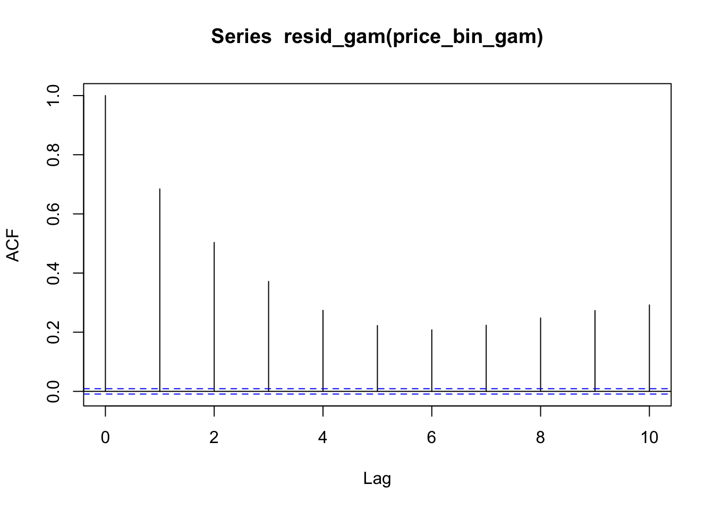
Here’s how to include an AR1 error model in a GAM.
# first, we need to have an indicator variable
# that tells our gam where each trajectory
# starts; also, the data set has to be set up
# so that adjacent measurements are also
# adjacent within the data set (which is already
# the case here)
price_bin <- price_bin %>%
group_by(id) %>%
mutate(traj_start=measurement_no == min(measurement_no)) %>%
ungroup()
# we obtain the autocorrelation at lag 1 within
# our data set
rho_est <- start_value_rho(price_bin_gam)
# we run the same model, but with two extra parameters:
# - AR.start is the indicator variable that shows
# the start of each trajectory in the data set
# - rho is roughly the degree of autocorrelation we
# wish to remove
price_bin_gam_AR <-
bam(f2 ~ age_o +
s(measurement_no, bs="cr", k=11) +
s(measurement_no, bs="cr", k=11, by=age_o),
data=price_bin,
AR.start=traj_start, rho=rho_est)Summarize this model:
summary(price_bin_gam_AR)
##
## Family: gaussian
## Link function: identity
##
## Formula:
## f2 ~ age_o + s(measurement_no, bs = "cr", k = 11) + s(measurement_no,
## bs = "cr", k = 11, by = age_o)
##
## Parametric coefficients:
## Estimate Std. Error t value Pr(>|t|)
## (Intercept) 1540.028 2.355 654.0 <2e-16 ***
## age_oyounger -120.433 3.717 -32.4 <2e-16 ***
## ---
## Signif. codes: 0 '***' 0.001 '**' 0.01 '*' 0.05 '.' 0.1 ' ' 1
##
## Approximate significance of smooth terms:
## edf Ref.df F p-value
## s(measurement_no) 9.524 9.908 347.59 <2e-16 ***
## s(measurement_no):age_oyounger 7.441 8.846 62.23 <2e-16 ***
## ---
## Signif. codes: 0 '***' 0.001 '**' 0.01 '*' 0.05 '.' 0.1 ' ' 1
##
## R-sq.(adj) = 0.253 Deviance explained = 25.3%
## fREML = 3.0449e+05 Scale est. = 39129 n = 47419Comparing the two models (without vs. with AR1) graphically.
plot_smooth(price_bin_gam, view="measurement_no", plot_all="age_o")
## Summary:
## * age_o : factor; set to the value(s): older, younger.
## * measurement_no : numeric predictor; with 30 values ranging from 0.000000 to 100.000000.
## * NOTE : No random effects in the model to cancel.
##
plot_smooth(price_bin_gam_AR, view="measurement_no", plot_all="age_o")
## Summary:
## * age_o : factor; set to the value(s): older, younger.
## * measurement_no : numeric predictor; with 30 values ranging from 0.000000 to 100.000000.
## * NOTE : No random effects in the model to cancel.
## 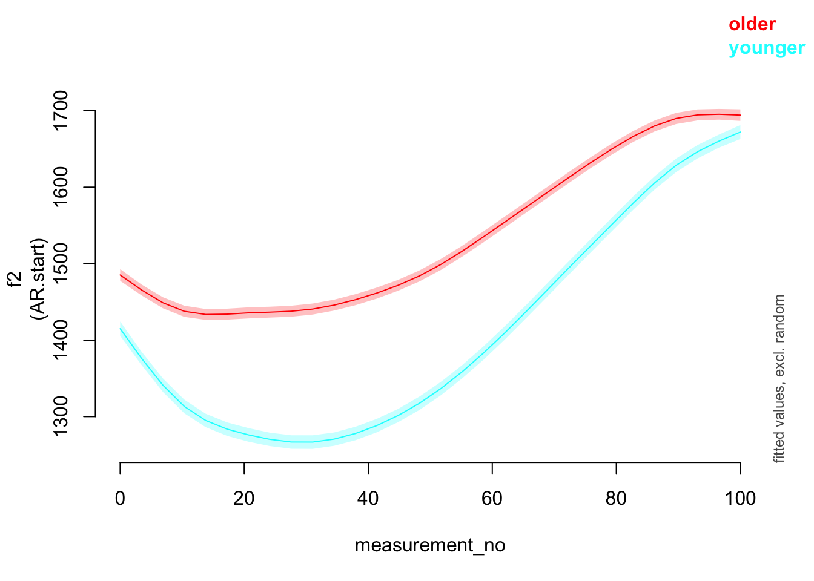
Now plotting the autocorrelation for this revised model. Note that resid_gam() has to be used for models that include an AR1 error model.
acf(resid_gam(price_bin_gam_AR), lag.max=10)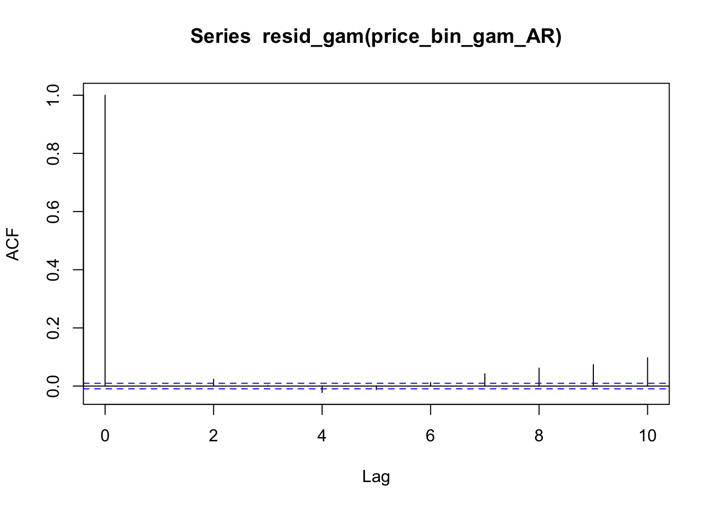
Exercise 10.4 Determine the best rho value for the global temperature model above. (Is it 0.7, the value we used?)
10.4.1 GAMs beyond linear regression
GAMs are generalized additive models in the same sense that GLMs are “generalized”: they can fit any model from the “exponential family”, including logistic regression and Poisson regression.1
To show an example, let’s load a new dataset, showing how the word “monitor” was used historically:
monitor <- read.csv("monitor_simplified.csv")This dataset was generously provided by Gaurav Kamath, PhD student in Linguistics, from a much larger dataset he’s using in current research.
Each row of this data corresponds to a single speech, by one parlimetarian, in the US Congress. It lists the number of times the word “monitor” was used in the speech in the senses of “ship” (“The U.S.S. Monitor docked”), “observe” (“We’ve got to monitor this”), or “newspaper” (“Christian Science Monitor”). These different meanings of the same (orthographic) word are called senses. Gaurav’s project examines how word senses change over time.
Columns of the dataframe:
speech_id: unique ID for the speechyearthe speech was deliveredsense: word sensecount: number of uses of this sensen: number of uses across all senses
Thus, n is the same for rows 1-3, then rows 4-6, etc.
Plot of proportion of uses of each sense over time:
ggplot(monitor, aes(x = year, y = count/n, color = sense)) +
geom_smooth() +
labs(x = "Year", y = "Proportion (count/n)", color = "Sense") +
coord_cartesian(ylim = c(0,1))
## `geom_smooth()` using method = 'gam' and formula = 'y ~ s(x, bs = "cs")'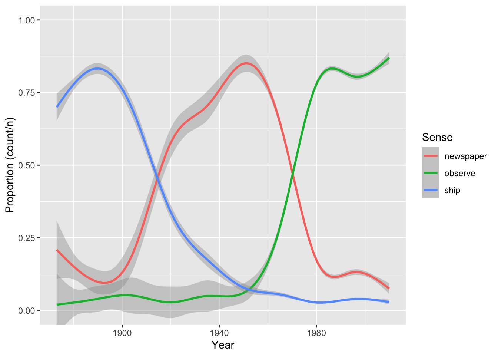
How “monitor” is used has changed dramatically over time.
Let’s model the rise and fall of the sense “newspaper”. First, subset to just this data:
monitor_newspaper <- filter(monitor, sense == 'newspaper')We’d like to model the probability of using sense “newspaper”. We can use a binomial model here, which is the same as logistic regression but for aggregated data. Instead of e.g. row 1 of monitor_newspaper being 3 rows with “usage = 1” (corresponding to count = 3) and 37 rows with “usage = 0” (corresponding to n = 40 minus count = 3).
Fit this model:
m1 <- bam(cbind(count, n-count) ~ s(year), data = monitor_newspaper, family = binomial)Exercise 10.5
Plot the predicted smooth from this model using
plot_smooth().Your plot should have a similar shape to the empirical plot above, but different numbers on the y-axis. Why is this?
It’s worth mentioning that including autocorrelation via an argument to bam() is not possible for generalized models (such as logistic regression).2
10.4.2 Working with mgcv models
itsadug is the package most commonly used by (psycho)linguists to work with fitted GA(M)Ms. itsadug has good functionality, but it’s important to not be limited by what any one package can do. Many packages can make predictions and prediction plots from mgcv models (fitted with bam() or gam()), such as ggeffects, modelbased, gratia, or emmeans. Different things you’ll want to do will be easier in different packages.
An example using ggeffects (used throughout RMLD: Sonderegger (2023)), which by default makes predictions on the response scale—here, probabilities, rather than log-odds.
library(ggeffects)
preds <- ggpredict(m1, terms = "year")
plot(preds) +
labs(y = "Predicted Probability", x = "Year") + ylim(0,1)
## Scale for y is already present.
## Adding another scale for y, which will replace the existing scale.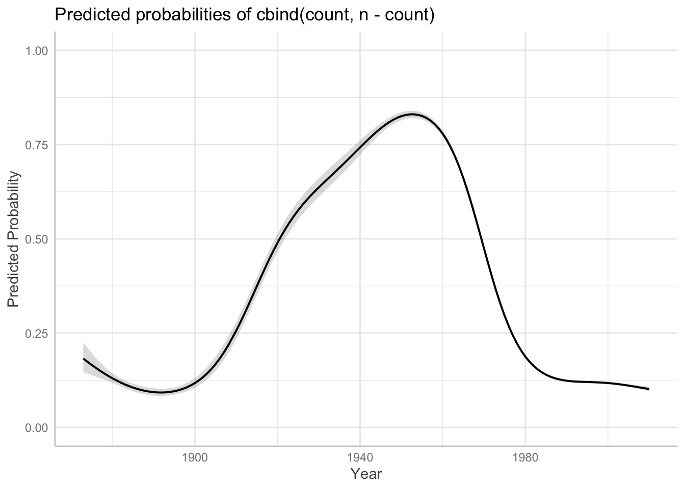
How similar does this look to your plot from Exercise 10.4?
To exemplify using emmeans with mgcv models, let’s fit a model to data from all three word senses.
Fit this model as m2, using the monitor dataframe. (Hint: this is like the price_bin_gam model above.) Don’t worry about autocorrelation here.
Solution:
Code
monitor$sense <- as.ordered(monitor$sense)
contrasts(monitor$sense) <- "contr.treatment"
m2 <- bam(cbind(count, n-count) ~ sense + s(year) + s(year, by = sense), data = monitor, family = binomial)Model predictions:
preds <- ggpredict(m2, terms = c("year", "sense"))
plot(preds) +
labs(y = "Predicted Probability", x = "Year", title = "") + ylim(0,1)
## Scale for y is already present.
## Adding another scale for y, which will replace the existing scale.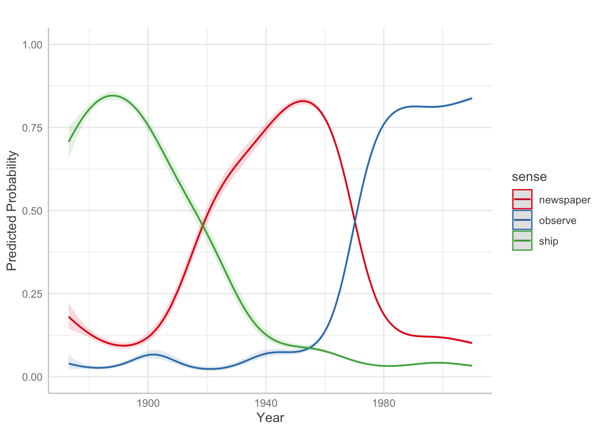
This emmeans code finds the pairwise differences between senses, averaging across years:
library(emmeans)
## Welcome to emmeans.
## Caution: You lose important information if you filter this package's results.
## See '? untidy'
emm <- emmeans(m2, ~sense)
pairs(emm)
## contrast estimate SE df t.ratio p.value
## newspaper - observe -2.96 0.0168 42636 -176.011 <.0001
## newspaper - ship 1.74 0.0277 42636 63.043 <.0001
## observe - ship 4.71 0.0273 42636 172.165 <.0001
##
## Results are given on the log odds ratio (not the response) scale.
## P value adjustment: tukey method for comparing a family of 3 estimatesExercise 10.6 What are these pairwise differences when year = 2010? (This requires figuring out how to get emmeans to make predictions about one predictor while another is held constant at a given value.)